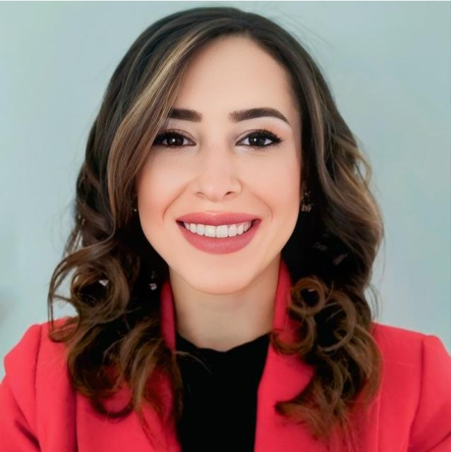

Conversas públicas
Encontros e debates com a comunidade do AI Collective sobre temas de IA e sociedade.
Filósofa residente · AI Collective
Ana Catarina é filósofa residente do AI Collective. Seu trabalho examina o que a IA faz com a linguagem, o conhecimento, a ética e a vida em comum.

Sobre
[Biografia: formação, instituição, área de pesquisa e a trajetória até o AI Collective. Texto a confirmar com a própria Ana Catarina.]
A filosofia, para ela, é uma prática: fazer perguntas difíceis em conversas abertas, dentro e fora da academia.
Trabalho
Encontros e debates com a comunidade do AI Collective sobre temas de IA e sociedade.
[Linhas de pesquisa e publicações a confirmar com o Lattes.]
Palestras e consultas sobre ética, linguagem e uso responsável de IA em organizações e escolas.
“[Frase própria da Ana Catarina, a confirmar.]
Contato
Para convites, palestras e conversas. Escreva em português, inglês ou francês.